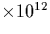

Taking , and the cut-off radius, , to be 4 Å, we can now vary either the temperature or the anneal time, as shown in Table 6.5 (capture radius, , is normally taken to be the separation at which the interaction energy is equal to kT [158]).
Note that this result does not allow for dimer dissociation. It is useful to compare these figures to the equilibrium dimer concentration, using
where B is the binding energy, and N is the number of BC sites. Taking B=0.3 eV (see above), N= 1023cm-3, and [Oi] = 1018cm-3, we get the results shown in the third column of Table 6.5. These show the approximation of no dimer dissociation breaks down at higher temperatures; at 500
| 2c1hr anneal | Equilibrium | 2c450 |
||
| Temp ( |
[O2i] (cm-3) | [O2i] (cm-3) | Time (mins) | [O2i] (cm-3) |
| 300 | 0.53 | 0.30 | 5 | 0.98 |
| 320 | 0.27 | 0.25 | 10 | 0.20 |
| 340 | 0.12 | 0.21 | 15 | 0.29 |
| 360 | 0.51 | 0.18 | 20 | 0.39 |
| 380 | 0.20 | 0.15 | 25 | 0.49 |
| 400 | 0.69 | 0.13 | 30 | 0.59 |
| 420 | 0.23 | 0.11 | 35 | 0.69 |
| 440 | 0.69 | 0.99 | 40 | 0.79 |
| 450 | 0.12 | 0.93 | 45 | 0.88 |
| 460 | 0.20 | 0.87 | 50 | 0.98 |
| 480 | 0.54 | 0.78 | 55 | 0.11 |
| 500 | 0.14 | 0.69 | 60 | 0.12 |
These results suggest that for a typical 450 C anneal, after an
hour we should expect over 1014 cm-3 dimers. This result
assumes a uniform oxygen distribution throughout the material, but in
practise this will probably not be the case. Even in quenched anneal
experiments, at higher temperatures the oxygen is able to diffuse
rapidly from one BC site to another. Treating this diffusion step
using simple kinetics, where x is the distance
between BC sites, we obtain hop rates as shown in
Figure 6.10.
C anneal, after an
hour we should expect over 1014 cm-3 dimers. This result
assumes a uniform oxygen distribution throughout the material, but in
practise this will probably not be the case. Even in quenched anneal
experiments, at higher temperatures the oxygen is able to diffuse
rapidly from one BC site to another. Treating this diffusion step
using simple kinetics, where x is the distance
between BC sites, we obtain hop rates as shown in
Figure 6.10.
This suggests that the oxygen concentration need not be uniform. Any
localised clustering will increase the dimer concentration figure
calculated above, and thus experimental as-grown concentrations of
 cm-3 are not inconsistent with this analysis
[239]. This is also particularly important in heavily
carbon doped material, where Cs exerts a long range strain field in
the lattice and can attract Oi in this way. It has been observed
that the oxygen concentration can vary by a factor of 1.6 over a given
sample, independant of cutting direction[159].
cm-3 are not inconsistent with this analysis
[239]. This is also particularly important in heavily
carbon doped material, where Cs exerts a long range strain field in
the lattice and can attract Oi in this way. It has been observed
that the oxygen concentration can vary by a factor of 1.6 over a given
sample, independant of cutting direction[159].
This result gives us an initial pool of dimers to work with, which should be present in as-grown material in quantities similar to those observed for the defect responsible for the 1012 cm-1 mode. The rate of loss of [Oi] during annealing agrees with that expected for Oi-Oi interaction with the normal Oi diffusion constant [82]. It therefore seems to be the case that the dominant Oi loss will occur through the formation of dimers, and no enhanced diffusion process for dimer formation needs to be invoked (such as trimer migration to Oi followed by decomposition into two dimers).